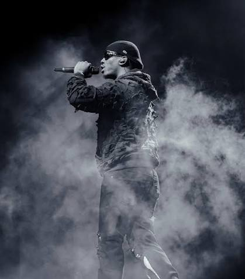

La vie de Werenoi
De Montreuil aux sommets du rap français, Werenoi a connu une ascension particulièrement rapide.
Ses origines
Werenoi, de son vrai nom Jérémy Bana Owona, est né le 30 janvier 1994 à Melun, en Seine-et-Marne. Il grandit ensuite à Montreuil, en Seine-Saint-Denis.
Sa famille est d'origine camerounaise. Werenoi était cependant très discret sur sa vie privée et préférait laisser sa musique parler pour lui.
Ses débuts
Il commence à se faire connaître en 2021 avec le morceau « Guadalajara ». Son univers musical, sa voix grave et son style reconnaissable attirent rapidement l'attention.
Il rejoint ensuite le label AWA avant de développer son propre label, PLR Music.

Une ascension rapide
Après ses premiers morceaux, Werenoi publie l'EP Telegram en 2022. Il enchaîne ensuite avec Carré en 2023 puis Pyramide et Pyramide 2 en 2024.
Ces projets lui permettent de collaborer avec de nombreux artistes importants du rap français et international, notamment Ninho, Damso, SCH, Maes, Aya Nakamura et Gims.
| Année | Projet | Importance |
|---|---|---|
| 2021 | Guadalajara | Début de sa notoriété |
| 2022 | Telegram | Premier projet important |
| 2023 | Carré | Premier album studio |
| 2024 | Pyramide | Confirmation de son succès |
| 2024 | Pyramide 2 | Nouveau succès commercial |
| 2025 | Diamant Noir | Dernier album sorti de son vivant |
Une carrière très courte mais marquante
En seulement quelques années, Werenoi s'impose comme l'un des artistes les plus écoutés du rap français. Il termine notamment numéro 1 des ventes d'albums en France en 2023 et en 2024.
Son style repose notamment sur une voix grave, des mélodies facilement reconnaissables et des textes parlant de réussite, d'argent, de relations et de son entourage.
Werenoi meurt le 17 mai 2025 à Paris, à l'âge de 31 ans, un peu plus d'un mois après la sortie de Diamant Noir.
Son dernier album est ainsi devenu, après sa disparition, le dernier projet publié de son vivant.